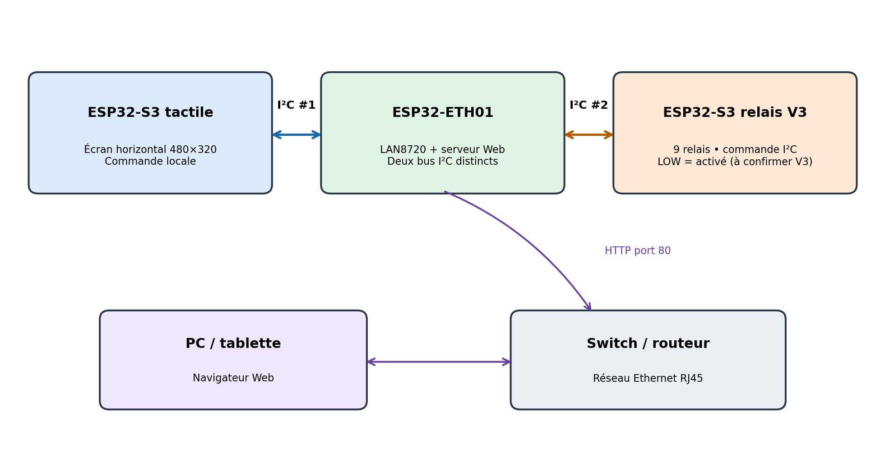
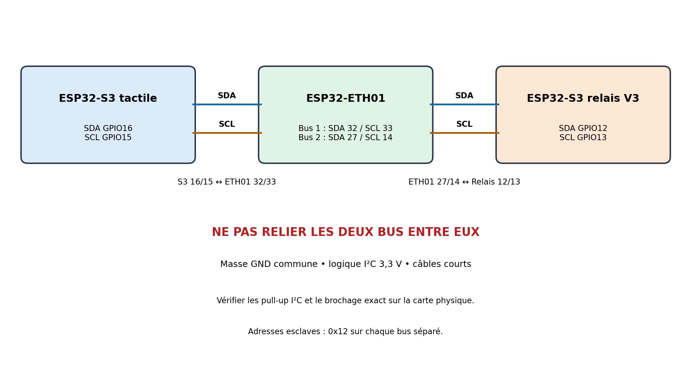
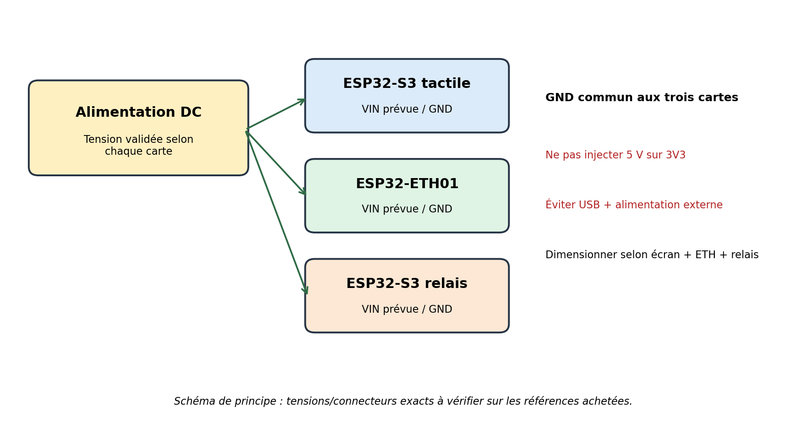
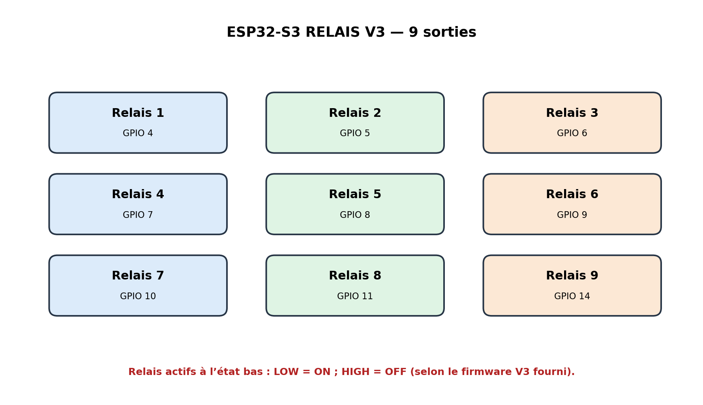

Les schémas illustrent les connexions logiques et ne représentent pas les empreintes exactes des connecteurs. Vérifiez les marquages et les fiches techniques avant tout câblage. Ne jamais appliquer 5 V sur une broche 3V3.
01 · Architecture générale
Le système associe un écran tactile ESP32-S3, une passerelle Ethernet ESP32-ETH01 et une carte ESP32-S3 dédiée aux neuf relais. L’écran communique avec l’ETH01 sur le bus I²C n°1 ; l’ETH01 transmet les commandes à la carte relais sur le bus I²C n°2. L’ETH01 héberge également un serveur Web sur le port TCP 80.

02 · Câblage des bus I²C
Les deux bus I²C doivent rester physiquement séparés. L’adresse 0x12 est utilisée sur chacun des bus ; cela est possible car les périphériques ne se trouvent pas sur le même bus.

| Liaison | SDA | SCL | Adresse |
|---|---|---|---|
| Écran S3 ↔ ETH01 (I²C 1) | Écran GPIO16 ↔ ETH01 GPIO32 | Écran GPIO15 ↔ ETH01 GPIO33 | 0x12 côté ETH01 |
| ETH01 ↔ Relais S3 V3 (I²C 2) | ETH01 GPIO27 ↔ Relais GPIO12 | ETH01 GPIO14 ↔ Relais GPIO13 | 0x12 côté relais |
Point d’attention : les GPIO16/GPIO15 de l’écran sont également utilisés par le contrôleur tactile FT5x06 dans le firmware. Le partage du bus doit correspondre exactement à la configuration du code ; ne modifiez pas ces GPIO sans adapter le firmware.
03 · Alimentation et sécurité

- Les tensions d’entrée et le courant maximal des trois modèles matériels ne sont pas confirmés par les firmwares : vérifier les inscriptions sur les cartes et les fiches techniques.
- Ne jamais appliquer 5 V sur une broche 3V3.
- Ne pas alimenter simultanément par USB et par une alimentation externe sans confirmation que la carte le permet.
- Relier les masses GND pour assurer une référence commune aux signaux I²C, même si les cartes disposent d’alimentations distinctes.
- Dimensionner l’alimentation en tenant compte de l’écran, de l’Ethernet et des bobines de relais.
- Pour la première mise sous tension, tester les cartes séparément et laisser les contacts des relais sans charge.
04 · Carte relais V3 — brochage des 9 relais
D’après le firmware V3 fourni, les relais sont actifs à l’état bas · Active LOW. La carte est pilotée par I²C ; les sorties relais ne sont pas commandées directement par les broches de l’écran.

| Relais | GPIO ESP32-S3 | Logique |
|---|---|---|
| R1 | GPIO4 | Active LOW |
| R2 | GPIO5 | Active LOW |
| R3 | GPIO6 | Active LOW |
| R4 | GPIO7 | Active LOW |
| R5 | GPIO8 | Active LOW |
| R6 | GPIO9 | Active LOW |
| R7 | GPIO10 | Active LOW |
| R8 | GPIO11 | Active LOW |
| R9 | GPIO14 | Active LOW |
05 · Broches de l’écran tactile
Écran horizontal ESP32-S3, résolution 480 × 320, contrôleur ST7796 avec LovyanGFX et tactile FT5x06.
| Fonction | Broche ESP32-S3 |
|---|---|
| SPI SCLK | GPIO12 |
| SPI MOSI | GPIO11 |
| SPI MISO | GPIO13 |
| Écran DC | GPIO46 |
| Écran CS | GPIO10 |
| Tactile SDA | GPIO16 |
| Tactile SCL | GPIO15 |
| Rétroéclairage | GPIO45 |
| Buzzer | GPIO42 |
06 · Ethernet — ESP32-ETH01 / LAN8720
L’ETH01 utilise le PHY LAN8720. L’adresse IP dépend du réseau et du firmware (DHCP ou configuration prévue). Connectez le RJ45 à un switch ou routeur et consultez la console série pour vérifier l’état Ethernet.
| Paramètre | Valeur du firmware |
|---|---|
| Adresse I²C côté écran | 0x12 |
| I²C n°1 — SDA / SCL | GPIO32 / GPIO33 |
| I²C n°2 — SDA / SCL | GPIO27 / GPIO14 |
| PHY Ethernet | LAN8720, adresse 1 |
| POWER PHY | GPIO16 |
| MDC / MDIO | GPIO23 / GPIO18 |
| Horloge PHY | ETH_CLOCK_GPIO0_IN |
| Nom d’hôte | Antenna_Relay_Ctrl |
| Serveur Web | TCP port 80 |
07 · Protocole I²C et fonctions
Commandes prévues dans le firmware ETH01 :
| Commande | Fonction |
|---|---|
0x01 | Commander un relais |
0x02 | Lire l’état des relais |
0x03 | Renommer un relais |
0x04 | Lire les noms des relais |
0x05 | Demander l’adresse IP de l’ETH01 |
Les noms de relais peuvent être conservés dans la mémoire Preferences lorsque cette fonction est activée par le firmware.
08 · Procédure de mise en service
- Vérifier le modèle, la tension, la polarité et les connecteurs des trois cartes.
- Programmer le firmware correspondant à la carte relais V3 à 9 relais.
- Tester l’écran seul : affichage, tactile, rétroéclairage et buzzer.
- Tester l’ETH01 : alimentation, RJ45, obtention de l’adresse IP et serveur Web.
- Tester la carte relais sans charge sur les contacts et vérifier les neuf sorties.
- Raccorder les bus I²C un par un ; contrôler les masses communes et la stabilité des échanges.
- Effectuer un essai fonctionnel complet avant de connecter les équipements d’antenne.
09 · Diagnostic rapide
| Symptôme | Contrôles prioritaires |
|---|---|
| L’écran ne répond pas | Alimentation, rétroéclairage, bus tactile et firmware de l’écran. |
| Pas de communication I²C | SDA/SCL croisés, GND commun, pull-up, adresse 0x12 et séparation des deux bus. |
| ETH01 sans réseau | Câble RJ45, switch, configuration DHCP/IP et logs série. |
| Relais inversés ou actifs au démarrage | Logique active LOW ; vérifier l’initialisation des sorties et tester sans charge. |
| Redémarrages ou instabilité | Capacité de l’alimentation, courant des bobines, masse et câblage. |
10 · Matériel du projet
- Carte relais ESP32-S3 : amazon.fr — carte relais
- Écran tactile horizontal ESP32-S3 : AliExpress — écran tactile
- Module ESP32-ETH01 LAN8720 : AliExpress — module Ethernet
Les liens et le brochage sont fournis comme références de projet. Confirmez les révisions exactes des cartes avant toute intervention matérielle.